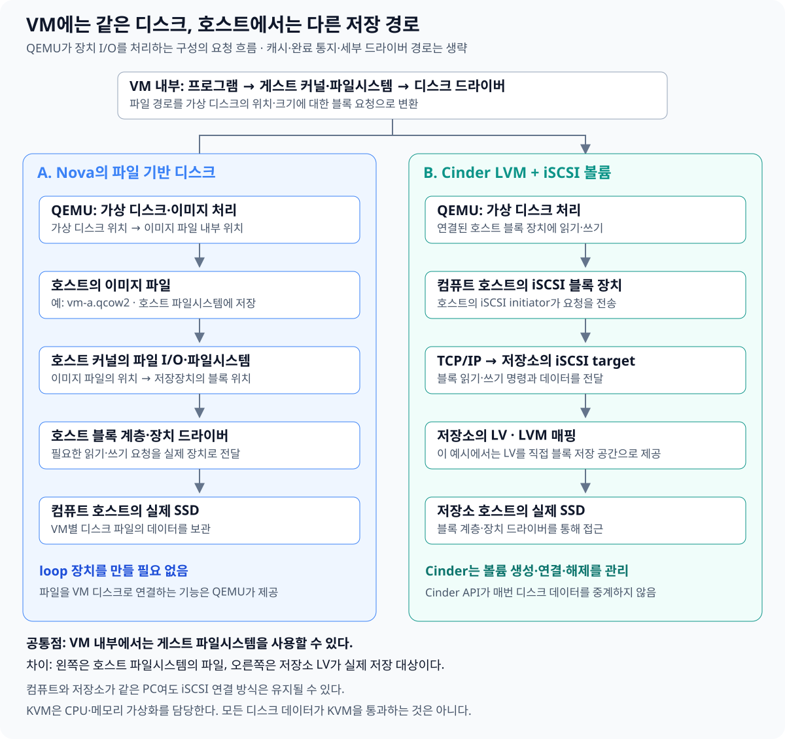

VM 안에서 보이는 디스크가 호스트에서도 반드시 물리 디스크나 LVM의 논리 볼륨인 것은 아니다. 호스트의 일반 파일도 VM의 디스크가 될 수 있고, Cinder가 제공하는 블록 볼륨도 VM의 디스크가 될 수 있다.
QEMU는 이러한 저장 공간을 VM의 가상 디스크에 연결한다. VM 내부에서는 비슷하게 보이지만, 호스트 쪽의 저장 형태와 관리 주체, 실제 읽기·쓰기 경로가 다르다.
이 글에서는 다음 두 구성을 비교한다.
- Nova의 파일 기반 디스크: 컴퓨트 호스트의 이미지 파일을 사용하는 구성
- Cinder LVM 볼륨: LVM의 LV를 만들고 iSCSI로 컴퓨트 호스트에 연결하는 구성
Cinder에는 다양한 저장 백엔드가 있다. 따라서 아래의 LV·iSCSI 설명은 Cinder 전체의 공통 구조가 아니라 LVM 백엔드를 사용하는 예시다.
1. 이미지와 루트 디스크는 무엇이 다른가?
Ubuntu 이미지로 VM을 생성할 때는 초기 상태의 원본과 실제로 사용할 디스크를 구분해야 한다.
| 구분 | 의미 |
|---|---|
| 운영체제 이미지 | VM의 초기 운영체제 상태를 제공하는 원본 |
| 루트 디스크 | 각 VM이 부팅하고 운영체제와 데이터를 읽고 쓰는 디스크 |
Ubuntu 이미지 하나로 VM A와 VM B를 만들면, 두 VM은 같은 초기 상태에서 시작할 수 있다. 이후 A에서 프로그램을 설치해도 B나 원본 이미지가 함께 변경되지는 않는다.
루트 디스크에는 일반적으로 Linux의 최상위 디렉터리 /에 해당하는 파일시스템이 들어 있다. 운영체제 설정과 프로그램, 별도 디스크로 분리하지 않은 사용자 데이터도 여기에 저장된다.
루트 디스크는 부팅할 때만 사용하는 공간이 아니라, VM이 실행되는 동안 계속 사용하는 기본 디스크다.
또한 ‘이미지’라는 단어는 두 가지 의미로 쓰인다.
- Glance에 등록된 운영체제 원본 이미지
- 실행 중인 VM의 디스크 내용을 저장하는 디스크 이미지 파일
둘 다 이미지라고 부를 수 있지만, 역할은 다르다.
2. VM의 루트 디스크를 준비하는 두 방식
Ubuntu 이미지의 내용을 어디에 준비하느냐에 따라 부팅 방식이 달라진다.
컴퓨트 호스트의 파일로 준비하기
Nova가 이미지로 인스턴스 디스크를 준비하고, QEMU가 해당 파일을 VM의 루트 디스크로 사용한다.
Cinder 볼륨으로 준비하기
이미지의 내용으로 Cinder 부팅 볼륨을 준비하고, 이를 VM에 연결해 루트 디스크로 사용한다.
Nova의 블록 장치 매핑에서도 이미지로 로컬 디스크를 준비하는 경우와 이미지로 볼륨을 준비하는 경우를 구분한다. Nova 블록 장치 매핑 문서
추가 데이터 볼륨은 부팅 방식과 별개다. 파일 기반 루트 디스크로 부팅한 VM에도 Cinder 볼륨을 추가로 연결할 수 있다.
3. 파일 하나가 어떻게 VM의 디스크가 되는가?
컴퓨트 호스트에 vm-a.qcow2라는 파일이 있다고 가정하자.
이 파일을 QEMU의 가상 디스크에 연결하면, 호스트와 VM에서는 같은 저장 공간을 서로 다르게 보게 된다.
| 보는 위치 | 보이는 형태 |
|---|---|
| 호스트 Linux | vm-a.qcow2라는 일반 파일 |
| VM 내부 Linux | /dev/vda 같은 디스크 장치 |
QEMU는 VM에서 전달된 디스크 읽기·쓰기 요청을 해석하고, 해당 데이터를 이미지 파일에서 읽거나 파일에 기록한다.
예를 들어 VM이 다음과 같이 요청한다고 생각할 수 있다.
“가상 디스크의 이 위치에서 데이터를 읽어 줘.”
QEMU는 그 가상 디스크 위치에 대응하는 이미지 파일의 데이터를 찾아 반환한다. qcow2는 내부 매핑 정보를 사용하는 형식이므로, 가상 디스크 위치와 호스트 파일의 위치가 단순히 같은 숫자로 대응하는 것은 아니다.
파일에는 게스트의 데이터뿐 아니라 파티션 정보, 파일시스템 정보, 운영체제 파일도 저장될 수 있다. QEMU는 raw·qcow2 등 여러 디스크 이미지 형식을 지원한다. QEMU 디스크 이미지 문서
파일은 VM마다 반드시 하나인 것이 아니라 가상 디스크마다 저장 대상이 연결되는 구조다. VM에 디스크가 여러 개 있다면 각각 다른 이미지 파일이나 블록 장치를 사용할 수 있다.
4. QEMU의 파일 기반 디스크에는 loop가 필요하지 않다
loop와 QEMU는 모두 파일을 디스크처럼 사용할 수 있게 하지만, 제공하는 대상이 다르다.
| 방식 | 제공 대상 | 처리 주체 |
|---|---|---|
| loop | 호스트 Linux에 /dev/loopN 블록 장치 제공 |
호스트 커널의 loop 드라이버 |
| QEMU의 파일 기반 가상 디스크 | VM 내부에 가상 디스크 제공 | QEMU의 가상 장치·이미지 처리 기능 |
LVM은 블록 장치를 입력으로 사용한다. 따라서 일반 파일을 LVM의 저장 공간으로 사용하려면 먼저 loop 블록 장치로 연결하는 과정이 필요하다.
반면 QEMU는 이미지 파일을 직접 사용할 수 있다. 호스트에 /dev/loopN을 만든 뒤 그 장치를 QEMU에 넘길 필요가 없다.
파일 기반 VM 디스크를 위해 Cinder용 PV·VG를 반드시 준비해야 하는 것도 아니다. 해당 파일을 저장할 호스트 파일시스템과 여유 공간이 있으면 된다.
5. 파일로 디스크를 제공할 수 있는데 왜 Cinder가 필요한가?
파일을 디스크로 제공하는 기능만으로도 VM을 실행할 수 있다. 하지만 클라우드에서는 저장 공간을 여러 사용자와 VM에 걸쳐 관리해야 한다.
예를 들어 다음과 같은 요구가 생긴다.
- 특정 프로젝트 소유의 100GB 볼륨을 생성한다.
- VM을 삭제해도 볼륨은 유지한다.
- 데이터 볼륨을 기존 VM에서 분리해 다른 VM에 연결한다.
- 볼륨 타입에 따라 사용할 저장 백엔드를 선택한다.
- 볼륨의 크기와 연결 상태를 API로 조회한다.
Cinder는 저장 공간을 독립적인 클라우드 자원으로 관리하는 서비스다. Horizon이나 CLI, API를 통해 볼륨을 생성하고 관리할 수 있게 한다. Cinder 공식 문서
파일로는 데이터를 보존할 수 없어서 Cinder를 쓰는 것이 아니다. 파일도 보존할 수 있지만, Cinder는 저장 공간의 소유권·생명주기·연결 상태를 일관되게 관리하는 체계를 제공한다.
6. Cinder와 LVM, QEMU의 역할
Cinder LVM 백엔드에서는 다음과 같이 역할이 나뉜다.
| 구성 요소 | 역할 |
|---|---|
| LVM | 물리 저장 공간을 관리하고 LV라는 논리 블록 장치를 제공 |
| Cinder | 볼륨 생성·삭제·연결 등을 관리하고 LVM 드라이버를 통해 저장 공간 준비 |
| QEMU | 연결된 저장 공간을 VM의 가상 디스크로 제공 |
저장 공간을 준비하는 과정은 다음과 같다.
- SSD나 파티션을 LVM의 PV로 등록한다.
- PV들을 VG로 묶는다.
- Cinder 설정에 사용할 VG 이름을 지정한다.
- Cinder LVM 드라이버가 그 저장 공간에서 볼륨을 생성한다.
따라서 ‘PV를 Cinder에 등록한다’기보다는 LVM에 PV·VG를 준비하고, Cinder에 사용할 VG를 지정한다고 표현하는 것이 정확하다.
Thin 구성을 사용하면 Cinder 볼륨은 thin pool의 공간을 사용하는 thin LV로 만들어질 수 있다. QEMU가 사용하는 것은 이 저장 공간에 연결된 블록 장치다.
7. iSCSI는 무엇이며 같은 호스트에서도 왜 사용하는가?
iSCSI는 SCSI 저장장치 명령과 데이터를 TCP/IP로 전달하는 프로토콜이다.
다른 서버의 저장 공간을 사용하는 쪽에서도 블록 장치로 접근할 수 있게 한다. 파일 이름을 전달하는 방식이 아니라, 디스크의 위치와 길이를 지정하는 읽기·쓰기 요청을 전달한다.
| 구성 요소 | 역할 |
|---|---|
| iSCSI target | 저장 공간을 제공하는 쪽 |
| iSCSI initiator | 해당 저장 공간에 연결해 사용하는 쪽 |
Cinder LVM 백엔드에서 iSCSI를 선택하면 저장소 쪽이 LV를 제공하고, 컴퓨트 호스트가 이에 연결한다. Cinder LVM 드라이버 문서
컴퓨트와 저장소가 같은 PC에 있어도 선택한 연결 방식이 자동으로 로컬 LV 직접 접근으로 바뀌지는 않는다.
QEMU가 로컬 LV를 직접 사용하는 것은 기술적으로 가능하다. 다만 그것은 로컬 블록 장치를 직접 연결하는 구성이며, Cinder의 iSCSI 연결 절차와는 다르다.
같은 호스트의 주소로 iSCSI에 연결한다면 일반적으로 호스트 내부에서 통신이 처리된다. iSCSI를 사용한다고 반드시 공유기나 외부 네트워크까지 패킷이 나가는 것은 아니다.
8. 이미지 파일과 Cinder 볼륨의 실제 읽기·쓰기 경로
다음 그림은 QEMU가 가상 디스크의 I/O를 처리하는 구성을 비교한다. 캐시와 완료 통지, 세부 드라이버 동작은 생략했다.


두 방식에 공통인 게스트 내부 처리
VM의 프로그램이 /home/ubuntu/memo.txt를 읽는다고 가정하자.
- 프로그램이 게스트 커널에 파일 읽기를 요청한다.
- 게스트 파일시스템이 파일 데이터의 위치를 찾는다.
- 게스트 디스크 드라이버가 가상 디스크에 블록 읽기 요청을 보낸다.
이 시점에 QEMU가 처리하는 것은 일반적으로 게스트의 파일 이름이 아니라 가상 디스크 위치에 대한 요청이다.
A. 이미지 파일을 사용하는 경우
QEMU는 가상 디스크 위치를 이미지 파일 내부 위치로 연결한다. 이후 호스트의 파일 I/O 기능을 사용해 데이터를 읽는다.
게스트 파일시스템 → 가상 디스크 → QEMU → 호스트 이미지 파일 → 호스트 파일시스템·블록 계층 → SSD
여기에는 서로 다른 두 파일시스템이 있다.
- 게스트 파일시스템:
memo.txt같은 VM 내부 파일을 관리한다. - 호스트 파일시스템:
vm-a.qcow2라는 호스트 파일을 관리한다.
게스트 파일시스템의 내용은 호스트 이미지 파일 안에 데이터로 저장된다.
B. Cinder LVM 볼륨을 사용하는 경우
QEMU는 컴퓨트 호스트에 연결된 iSCSI 블록 장치에 I/O를 수행한다. 요청은 저장소 쪽으로 전달되고, 해당 LV의 데이터에 접근한다.
게스트 파일시스템 → 가상 디스크 → QEMU → 호스트 iSCSI 블록 장치 → iSCSI target → LV → SSD
이 구성에서는 볼륨 데이터를 저장하기 위해 호스트 파일시스템의 이미지 파일을 거치지 않는다. LV를 직접 블록 저장 공간으로 제공한다.
다만 LV의 데이터 안에는 VM이 사용하는 게스트 파일시스템이 들어 있을 수 있다. ‘호스트 이미지 파일이 없다’는 것이 ‘게스트에도 파일시스템이 없다’는 뜻은 아니다.
쓰기도 같은 저장 대상으로 이어진다
쓰기 요청도 각각 이미지 파일 또는 LV에 반영된다. 다만 게스트·호스트·저장장치의 캐시가 개입할 수 있으므로, 프로그램의 쓰기 호출이 반환된 순간과 실제 SSD에 영구 기록된 순간이 항상 같은 것은 아니다.
또한 모든 가상화 구성에서 데이터가 반드시 QEMU 프로세스를 통과하는 것은 아니다. 장치 처리를 커널이나 별도 프로세스에 맡기거나, 장치를 VM에 직접 할당하면 경로가 달라진다.
9. Cinder와 KVM은 매번 디스크 데이터를 전달하는가?
Cinder API는 디스크 데이터의 전달 경로가 아니다.
Cinder는 볼륨을 생성하고 연결에 필요한 정보를 제공하며, 연결·해제 상태를 관리한다. 연결이 끝난 뒤의 데이터는 iSCSI 같은 저장장치 통신 경로로 전달된다.
KVM 역시 모든 디스크 데이터를 직접 읽고 쓰는 역할을 맡지 않는다.
| 구성 요소 | 주된 책임 |
|---|---|
| Cinder | 볼륨 자원의 생성·연결·삭제 관리 |
| QEMU | 가상 디스크 요청과 저장 대상 연결·처리 |
| KVM | 게스트 CPU 실행과 메모리 가상화의 핵심 기능 |
| 호스트 커널의 I/O 기능 | 파일·블록 장치·네트워크 요청 처리 |
가상 장치 요청을 처리하기 위해 KVM에서 QEMU로 제어가 돌아올 수는 있다. 하지만 그 뒤 QEMU가 파일이나 블록 장치에 수행하는 모든 I/O가 다시 KVM을 통과하는 것은 아니다.
10. 같은 이미지를 여러 VM에서 사용하면 데이터도 공유되는가?
같은 Ubuntu 이미지를 선택했다는 것은 동일한 초기 상태를 사용한다는 뜻이다. 실행 중인 모든 VM이 하나의 디스크에 함께 쓰는 것은 아니다.
대표적으로 두 가지 준비 방식이 있다.
| 방식 | 구조 |
|---|---|
| 독립 복사 | 각 VM에 원본 내용을 담은 독립 디스크를 준비 |
| 원본 공유와 변경분 분리 | 읽기 전용 원본을 공유하고, VM마다 별도의 overlay를 준비 |
원본 공유와 overlay
QEMU의 qcow2는 backing file을 이용해 원본과 변경분을 나눌 수 있다.
예를 들어 VM A와 VM B가 같은 원본을 참조하더라도:
- A의 쓰기는 A의 overlay에 기록한다.
- B의 쓰기는 B의 overlay에 기록한다.
- 읽을 데이터가 자신의 overlay에 있으면 그 데이터를 읽는다.
- 자신의 overlay에 없으면 원본에서 읽는다.
VM 내부에서는 원본과 overlay가 합쳐진 디스크 하나로 보인다. QEMU 이미지 도구 문서
변경분에는 새로 추가한 파일뿐 아니라 기존 파일 수정과 삭제에 따른 파일시스템 정보 변경도 포함된다.
이 구조에서는 원본도 해당 VM 디스크의 구성 요소다. overlay 파일만 보관한다고 디스크 전체가 보존되는 것은 아니며, 원본 의존성도 함께 관리해야 한다.
원본이 항상 Glance 서버에서 실시간으로 읽히는 것도 아니다. 컴퓨트 호스트에 캐시된 원본을 참조하는 구성도 가능하다.
특정 VM이 독립 복사인지 원본 공유인지 확인하려면 실제 디스크 설정과 backing chain을 조회해야 한다. qcow2라는 확장자나 같은 이미지 이름만으로 판단할 수는 없다.
11. 운영 관점에서 두 방식의 차이
| 항목 | Nova의 파일 기반 디스크 | Cinder LVM 볼륨 |
|---|---|---|
| 예시 저장 형태 | 호스트의 이미지 파일 | 저장소의 LV |
| 관리 단위 | VM에 종속된 인스턴스 디스크 | 별도 ID를 가진 볼륨 자원 |
| Cinder용 PV·VG | 필요 없음 | LVM 백엔드에서는 필요 |
| VM 삭제 시 | 일반적으로 함께 삭제 | 연결의 삭제 옵션에 따라 유지 또는 삭제 |
| 다른 VM에서 재사용 | 파일 복사·연결 등을 별도로 관리 | 볼륨 연결·해제 절차로 관리 |
| 저장소 위치 | 이 예시에서는 컴퓨트 호스트 | 컴퓨트와 같거나 다른 호스트 |
| 데이터 접근 | 파일 I/O | 이 예시에서는 iSCSI 블록 I/O |
파일 기반 디스크를 ‘임시 디스크’라고 부르더라도, 일반적인 VM 재부팅이나 전원 끄기만으로 내용이 사라진다는 뜻은 아니다. 주로 VM의 생명주기와 함께 관리된다는 의미다.
반대로 Cinder 볼륨을 사용한다고 데이터 복제나 고가용성이 자동으로 생기는 것은 아니다. 단일 서버의 LVM 저장소라면 그 서버나 SSD의 장애에 영향을 받는다.
파일 기반인지 블록 기반인지 만으로 어느 쪽이 더 빠르다고 단정할 수도 없다. 이미지 형식, 캐시, 네트워크, SSD, 저장 백엔드 구성이 성능에 함께 영향을 준다.
12. 현재 개인 서버 구성에서 확인된 범위
제공된 설정과 출력에서는 다음이 확인됐다.
- SSD 두 개가
cinder-ssdVG에 포함되어 있다. - Cinder의 SSD 백엔드는 LVM과 thin 구성을 사용한다.
ssd-test볼륨에 대응하는 thin LV가 생성됐다.- 해당 볼륨이 VM에 연결되어
in-use상태로 바뀌었다. - Cinder 설정에는 iSCSI 전송 방식이 지정되어 있다.
따라서 추가 볼륨은 Cinder LVM + iSCSI 구성으로 제공하도록 설정되어 있다고 설명할 수 있다.
다만 test-vm의 루트 디스크가 독립 복사인지, backing file을 참조하는 overlay인지에 대해서는 실제 디스크 조회가 완료되지 않았다. 현재 실행 중인 I/O 경로를 추적한 결과도 없으므로, 설정과 개념으로 설명한 구조를 런타임 검증 결과와 구분해야 한다.